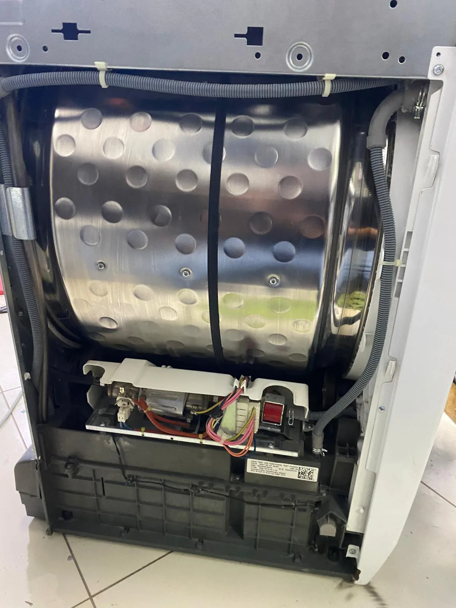
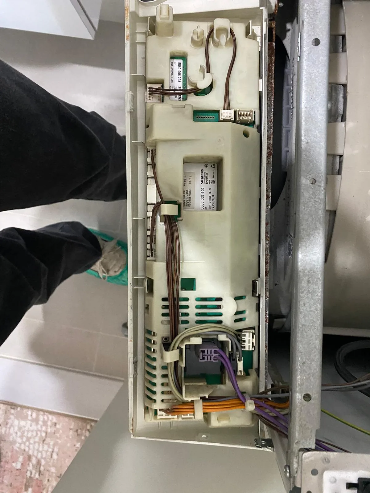
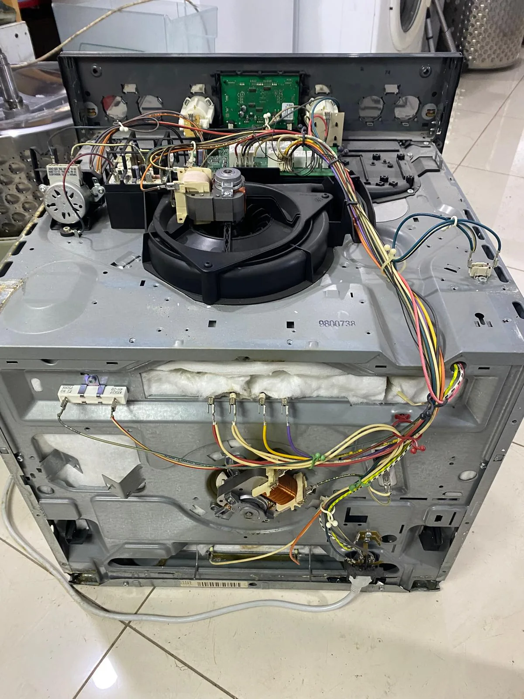
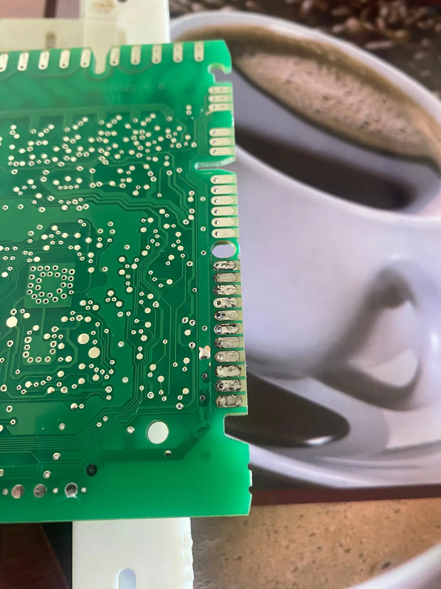

Hizmeti İncele →
Hizmeti İncele →PENDİK • KURTKÖY • İSTANBUL ANADOLU YAKASI
Beyaz eşyalarınız için hızlı ve profesyonel teknik destek.
Buzdolabı, çamaşır makinesi, bulaşık makinesi, kurutma makinesi, fırın, ocak, klima, kombi ve derin dondurucu sorunlarında servis talebinizi kolayca oluşturun.
✓ Yerinde arıza değerlendirmesi✓ Hızlı iletişim✓ English Support

Pendik ve Kurtköy odaklı hızlı iletişim ve teknik destek
4.8/5Google işletme profili puanı
Değerlendirme sayısı değişebilir
Değerlendirme sayısı değişebilir
4.8/5Google işletme profili puanı
GoogleMüşteri değerlendirmelerini inceleyin
2 KanalTelefon + WhatsApp iletişimi
ENEnglish Support
GOOGLE KONUM
Servis bölgemizi ve konumumuzu Google Maps'te görün.
Pendik / Orhangazi bölgesindeki konumumuzu açabilir, tek dokunuşla yol tarifi alabilirsiniz.
GERÇEK SERVİS ÇALIŞMALARI
Tüm çalışmaları incele →Stok görseller yerine yaptığımız işlerden kareler
Fotoğraflar, sahada gerçekleştirdiğimiz teknik inceleme ve servis çalışmalarından seçilmiştir. Cihaz türü net olmayan görseller yanlış hizmet başlığıyla kullanılmaz.





HİZMETLER
Her cihaz için ayrı, anlaşılır hizmet sayfaları
Arızanıza uygun hizmet sayfasından sık görülen sorunları inceleyebilir ve doğrudan iletişime geçebilirsiniz.
Hizmeti İncele →Hizmeti İncele → Hizmeti İncele →
Hizmeti İncele → Hizmeti İncele →
Hizmeti İncele →TEKNİK SERVİS
Fırın & Ocak Servisi
Isıtma, rezistans, termostat, ateşleme ve panel sorunlarında teknik destek ve arıza tespiti.
Hizmeti İncele →TEKNİK SERVİS
Klima Bakım & Temizlik
Klima bakım, temizlik, performans kontrolü ve uygun arızalarda teknik destek için servis talebi oluşturabilirsiniz.
Hizmeti İncele →TEKNİK SERVİS
Kombi Servisi
Isınma, sıcak su, basınç ve genel çalışma sorunlarında teknik destek talebinizi iletebilirsiniz.
Hizmeti İncele →TEKNİK SERVİS
Derin Dondurucu Servisi
Soğutmama, aşırı buzlanma, ses ve elektronik kontrol sorunlarında teknik servis desteği.
Hizmeti İncele →
NEDEN BİZ?
Teknik servisi daha şeffaf ve ulaşılabilir hale getiriyoruz.
Doğru yönlendirmeCihaz ve arıza belirtisine göre daha net iletişim.
Şeffaf süreçServis talebi öncesinde temel bilgiler paylaşılır.
Yerel odakPendik ve Kurtköy çevresinde kolay ulaşım.
English SupportYabancı müşteriler için İngilizce iletişim.
SERVİS SÜRECİ
4 adımda servis talebi
01
İletişime geçin
Cihaz türünü ve yaşadığınız sorunu paylaşın.
02
Bilgi verin
Marka, model ve arıza belirtisini mümkün olduğunca net yazın.
03
Planlama
Uygunluk durumuna göre talebiniz değerlendirilir.
04
Kontrol
Yapılan işlem sonrasında temel çalışma kontrolleri gerçekleştirilir.
MÜŞTERİ DENEYİMLERİ
Google'da paylaşılan gerçek yorumlardan seçtiklerimiz
Yorum metinleri özetlenmeden ve pazarlama diliyle yeniden yazılmadan, müşterilerin Google İşletme Profilinde paylaştığı haliyle gösterilir.
Google★★★★★
Buzdolabı tamiri için aynı gün 2 saat içinde geldiler. Çok temiz iş yaptılar. Başka tamircinin bize söylediği fiyatın neredeyse yarısına mal oldu. Temiz iş yaptıkları gibi kazıklamaya da çalışmadılar. Memnun kaldık.
Talha A.Kaynağı Google'da aç ↗
Google★★★★★
Gerçekten çok memnun kaldım. Usta çok ilgili, güler yüzlü ve işinin ehli. Sorunumu anlattığımda hiç bekletmeden hemen gelip ilgilendi ve kısa sürede tamirini yaptı. İşini titizlikle yapan, güvenebileceğiniz bir usta.
Engin Anıl DenizKaynağı Google'da aç ↗
Güncel yorumların tamamı Google İşletme Profili üzerinde yer alır.
Daha fazla seçilmiş yorumu görüntüle →